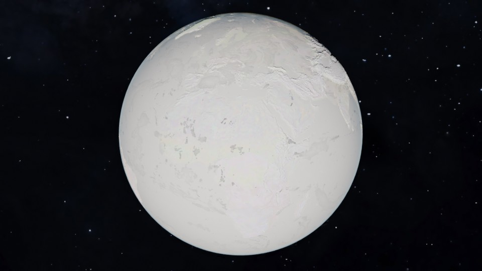

What Causes an Ice Age to Begins
Our planet has experienced many little ice ages and five major ice ages in its history, and currently we're in a warm interglacial period that began about 11,000 years ago. Here are some hypotheses that caused an ice age to begin:
-
Milankovitch Cycles
Earth's eccentricity always changed due to gravitional pull from another celestial bodies, making its orbit to be more elliptical. Earth's obliquity or axis varying between 22.1 and 24.5 degrees over a cycle of about 41,000 years. Also Earth's precession or the shift in the orientation of Earth's rotational axis always changed every 26,000 year. This cycles affect the Earth's climate to eventually become colder or warmer.
-
Tectonic Activity and Changes in Ocean Circulation
The shift of Plate tectonics can affect the Earth's temperature when the earth plates uplift the mountain ranges and their position influences ocean currents to keep hotter seawater from entering the region's pole. When these things happen, they will affect the heat distribution. Making the Earth's average temperature to become colder.
-
Reduction in Greenhouse Gases
During the ice age, greenhouse gases like CO2 are often lower in the atmosphere. There are several factors that causes lower CO2 emissions, such as high CO2 absorption by the ocean or vegetation, Soil Carbon Sequestration, Peatlands and Wetlands. Low levels of greenhouse gases reduce the greenhouse effect, making the Earth lose its heat more easily.
-
Ice and Snow Feedback Mechanisms
White color like Ice and snow reflect a high percentage of incoming solar radiation (high albedo), which reduces the amount of heat absorbed by Earth's surface. When ice sheets expand, they reflecting more sunlight, leading to further cooling and more ice formation. Cooler temperatures can lead to reduced levels of carbon dioxide (CO2) in the atmosphere, as CO2 is absorbed by the oceans and stored in ice sheets. Lower CO2 levels contribute to further cooling.
-
Volcanic Activity
Volcanic Activity produce huge amount of CO2 and SO2. While CO2 can contribute to global warming, Sulfur Dioxide (SO2) reacts with water vapour to form Sulfuric Acid Aerosol, which reflect great amount of the sunlight and have a cooling effect on the planet surface. This cooling effect can contribute to a drop in global temperature.
-
Ice Sheet Formation
During cooler periods, the temperatures remain low enough that the snow to doesn't fully melt in the summer. As more snow falls, especially in the winter, snow accumulates over time in polar and high-altitude regions. Over thousands of years the weight causes the snow to compact and turn into ice. this process creates large ice sheets and glaciers.
The Five Major Ice Age Ever Occured
It's known that there are five major Ice Age ever occurred in our planet history, and at least two of them resulted in our planet to becomes what's known as Snowball Earth.

Picture of Snowball Earth
-
Huronian Ice Age
Huronian Ice Age is the first known for the major ice age in our planet history. It's the longest lasting ice age which began about 2.4 billion years ago and lasted until 2.1 billion years ago. The Huronian believed was triggered by the Great Oxygenantion Event caused by the Cyanobacteria evolved to produce oxygen from photosynthesis, the oxygen removed atmospheric methane, making the Earth to cool down over time.
-
Cryogenian Ice Age
Cryogenian Ice Age is known for the most severe ice age on Earth's history, which began about 720 million years ago and ended until 630 million years ago during Neoproterozoic Era. The glaciers at this period extended as far as the equator. Making Cryogenian, the second Snowball Earth period after the Huronian.
-
Andean-Saharan Ice Age
Andean-Saharan Ice age was occured during the late Ordovician and the Silurian period or about 460-430 million years ago. This happened due to the rise of the Andes (mountain range in South America) that affects atmospheric circulation and also volcanic activity, which caused CO2 levels to plummeted, thereby chilling the planet.
-
Late Paleozoic Ice Age
The Late Paleozoic, also known as the Carboniferous-Permian glaciation, began around 340 million years ago, in the late Devonian and ended about 250 million years ago. This event occured due to the change in plate tectonics that altered the ocean currents and atmospheric circulation patterns, also reductions in CO2 level that contribute to global cooling. This event had a significant impact on Earth's climate and led to the Permian-Triassic extinction, the largest mass extinction in Earth's history.
-
Quaternary Ice Age
Quaternary is the most current ice age to our life, it began around 2.58 million years ago, and we're still in the period of warm interglacial ice age. What triggers the Quaternary ice age are changes in the Earth's orbit around the Sun, followed by the movement of plate tectonics, which uplift the mountainous region and changes the ocean currents. During this time sea level about 122 meters (400 feet) lower than today. Quartenary divides into two epochs the first one, Pleistocene (2.58 million years ago - 11.700 years ago), and the second one, Holocene (11.700 years ago to the present).
Pleistocene Ice Sheet Coverage
During the peak of Pleistocene, about 20,000 years ago, ice sheets covered large parts of Europe, North America, South America, and Northern Asia. In North America, the Laurentide Ice Sheet stretched across much of Canada and the northern United States, and the Cordilleran Ice Sheet covered parts of the Pacific Northwest. Meanwhile in Europe, the Fennoscandian Ice Sheet spread across northern Europe, encompassing parts of Scandinavia and the Baltic region.
Flora and Fauna during Pleistocene Epoch
During Pleistocene Epoch flora and fauna was notable for its diversity and size. Vegetation ranged from tundra with low shrubs and grasses in colder regions to temperate forests with broadleaf trees during warmer phases. Fauna featuring iconic megafauna such as Woolly Mammoths, Woolly Rhinoceroses, and Mastodons. These massive herbivores roamed the steppe-tundra and forested regions, while predators like Saber-toothed Cats, Dire Wolves, and Short-faced Bears hunted them. Additionally, smaller mammals, such as Giant Ground Sloths and Peccaries, populated the varied environments. The Pleistocene was a time of significant ecological change, with species evolving and adapting to the shifting climates. The climate transition at the end of the epoch eventually led to the dramatic extinction of many of these large animals at the end of the epoch.
Will Ice Age Happen Again?
The Earth's climate itself change over the years, making it cooler and warmer at some period. It's known that Earth would be on track to re-enter colder glacial period sometime in the upcoming 50,000 years if human don't produce greenhouse gases. But the facts we do produce greenhouse gases making the Earth to get warmer, hence it's unlikely for the Earth to get colder as in the glacial period for the short time, but it's still possible for the Earth to re-enter an ice age in thousands or even million of years.
 Pinterest
Pinterest Youtube
Youtube